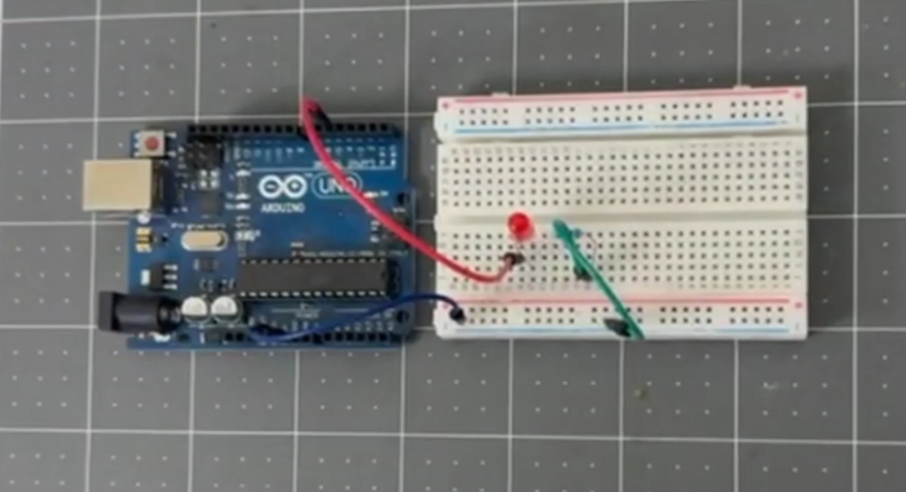

🎥 Видео уроки Arduino
💻 Онлайн схемы

Подключение светодиода к Arduino
На этой схеме показано, как подключить светодиод к плате Arduino и управлять им через код.
🔌 Офлайн схемы

Сборка макетной схемы
Пошаговая инструкция по сборке макетной схемы со светодиодом и резистором на плате Arduino.